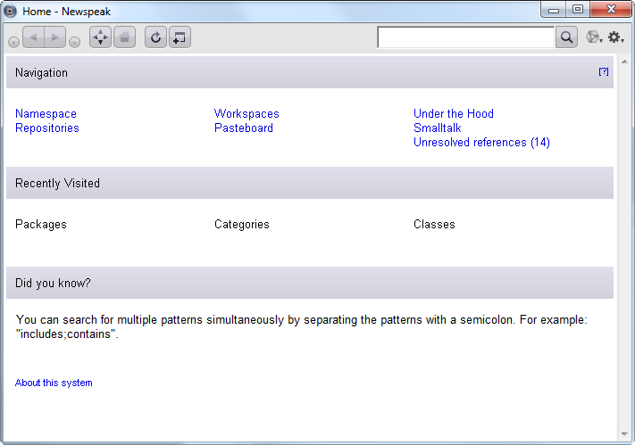

The Newspeak Programming Language
What is Newspeak?
Newspeak is a new programming language in the tradition of Self and Smalltalk. Newspeak is highly dynamic and reflective - but designed to support modularity and security. It supports both object-oriented and functional programming.
Like Self, Newspeak is message-based; all names are dynamically bound. However, like Smalltalk, Newspeak uses classes rather than prototypes. As in Beta, classes may nest. Because class names are late bound, all classes are virtual, every class can act as a mixin, and class hierarchy inheritance falls out automatically. Top level classes are essentially self contained parametric namespaces, and serve to define component style modules, which naturally define sandboxes in an object-capability style. Newspeak was deliberately designed as a principled dynamically typed language. We plan to evolve the language to support pluggable types.
Why Newspeak?
It’s hard to justify a new programming language. Those of us who love programming languages need no justification: if we can make a better language, we obviously should. However, improving the state of the art isn’t enough of a reason for those less passionate about the subject. The costs of learning, tooling and interoperability argue for the status quo. Fortunately, every now and then circumstances change enough to create an opening for new technology.
There are two such changes ongoing at the moment. One is the continuing evolution of the internet. There is growing demand for applications that work well on and off line, combining the ease of maintenance of web applications with the high quality user experience of local clients.
There are those who argue that the answer to these needs is do all computing on the server (in other words, a return to 1970s style time sharing, or early 90s style X-terminals). Instead, we believe in a notion of service oriented computing that allows for off-line operation and leverages the inherent advantages of client devices, while utilizing the strengths of the network. This idea, of objects as software services, has been presented in a whitepaper, slides, video and a blog post; these don’t mention Newspeak directly, but they do suggest how certain language features could facilitate this notion. We’ve tried to make these features an integral part of Newspeak, which may make it especially relevant in the internet age.
The other big change is multicore processing. It’s not clear how this will play out, but we may finally realize some of the promise of functional programming. And we’re also very likely to see a lot more of actors, and a lot less of the poisonous coupling of concurrent computation with shared state. Newspeak is a natural fit with actor style concurrency, and fully supports higher order functions. Newspeak can support both a traditional imperative style, and a pure functional style. There is one exactly one construct in the entire language that makes it imperative; the rest depends on the libraries you use.
Status
An initial prototype of Newspeak has been released, and may be downloaded here. You can also get the latest development version by visiting our source code repository.
At the moment, Newspeak is very much a work in progress. The existing implementation runs on top of Squeak Smalltalk, and shares many of Squeak’s libraries and infrastructure. However, Newspeak has its own GUI libraries and IDE infrastructure (see the screenshot below), and can be implemented independently of Squeak, Smalltalk or any particular VM or IDE. A port that runs in a web browser is partially working, as you can see here.
Who’s to blame for Newspeak?
Gilad Bracha,Peter Ahe, Vassili Bykov, Ryan Macnak, Eliot Miranda and Bill Maddox with invaluable contributions, both technical and otherwise, by Yaron Kashai.
Why is it called Newspeak?
In Orwell's novel 1984, Newspeak was a language that grew smaller over time. Unlike the case of natural languages, for a programming language this is actually a good thing. It is an ideal we strive for - a shrinkable language.